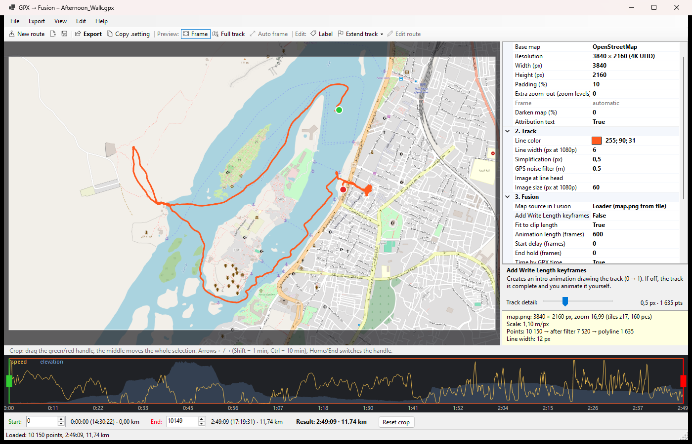

GPX → Fusion
Turn a GPX track into a map background and an animatable Fusion polyline for DaVinci Resolve.
View on GitHub Quick startOverview
GPX → Fusion is a small Windows app. You open a GPX file from your watch, phone or bike computer, choose the part of the track you want, and export:
A map background (OpenStreetMap, satellite or CARTO) at up to 8K, framed around your track.
Native Fusion nodes: the track as a polyline mask, its color and the merge. Paste them with Ctrl+V.
The track draws itself over the clip, at a constant pace or at the real GPX pace including pauses.
Optional text labels and an image (e.g. a little train) that rides on the head of the line.
The app does not render video. Everything ends up as ordinary Fusion nodes that you can keep editing and animating in Resolve.
Installation
Requirements: Windows 10/11 and the .NET 10 Desktop Runtime. DaVinci Resolve (free or Studio) is needed for the result.
Build and run from source:
git clone https://github.com/DorwinDT/GpxToFusion.git
cd GpxToFusion
dotnet run --project src/GpxToFusion -- "C:\path\to\track.gpx"The GPX path is optional. You can also start GpxToFusion.exe and open a file from the menu, or drag it into the window.
The main window

| Area | What it does |
|---|---|
| Menu & toolbar | File, Export, View, Edit, Help. The toolbar has the most common commands: Export, Copy .setting, preview mode, Auto frame, Label and Extend track. |
| Map preview | Shows exactly what map.png will contain (Frame mode, F5) or the whole track with the export frame outlined (Full track, F6). Drag to pan, wheel to zoom. |
| Settings panel | All export options grouped as Map, Track, Fusion, Labels and Added points. The box below shows help for the selected option. |
| Info box | Output size, zoom, number of tiles, map scale, point counts after filtering and simplification, and the resulting line width. |
| Crop timeline | The x axis is time, so pauses are visible. Speed is drawn in yellow, elevation in blue. Green and red handles mark the start and end. |
Workflow
- Open a GPX.
File → Open GPX… (Ctrl+O) or drag a
.gpxfile into the window. The track is shown on the map and the timeline fills with speed and elevation. You can also save everything as a project (Ctrl+S,*.g2f.json) and load it later. - Crop the track.
Drag the green handle (start) and the red handle (end). Dragging the middle moves the whole selection. For exact values use the Start / End fields under the timeline. Reset crop selects the whole track again.
Keyboard: ←/→ move the selected handle by 1 point, with Shift by 60 and with Ctrl by 600 points (about 1 and 10 minutes for a track recorded every second). Home/End select the start or end handle.
- Extend the track (optional)
Started the tracker too late or stopped it too early? Use Extend track → Start or End and click in the map. New points chain outward from the green (start) or red (end) point and are joined by straight lines, drawn dashed in the preview.
- Click = new point, drag = move a point, click on a segment = insert a point, right button = delete, Esc = done.
- Times for the added points are computed from 5. Added points → Speed of added segments (0 = your moving average from the GPX). Elevation is copied from the nearest recorded point.
- Added points are saved in the project. The original GPX is never changed; File → Save GPX with added points… writes a new file.
If the track is cropped at that end, the added points are not exported until you reset the crop. The status bar warns you about this.
- Set up the map and the frame.
In 1. Map choose the base map, the resolution (HD, 4K, 8K, vertical, square or custom), padding around the track, extra zoom-out and darkening. In 2. Track set the line color and width.
By default the frame fits the cropped track automatically. To frame it yourself, drag the map in the preview (or use the middle button while adding labels or points) and zoom with the wheel (Shift = finer steps). In Full track mode you drag the frame outline directly. Auto frame (Ctrl+0) returns to the automatic frame; changing padding or extra zoom-out does the same.
Planning to zoom or pan in Resolve? Export a bigger map (8K) or set Extra zoom-out to 0.5–1, so you have room to move and pixels don't show.
- Add map labels (optional)
Click Label (Ctrl+L) and then the place in the map. A dialog lets you set text (multiple lines allowed), font, size, bold/italic, color, outline and alignment. In the preview: double-click = edit, drag = move, right button = edit/delete menu. A new label takes over the style of the previous one.
Labels are anchored to a GPS position, so they stay in place when you change the crop or resolution. 4. Labels → Label output decides how they are exported:
- Fusion Text+ (default): every label becomes a
Label1,Label2… node merged byMergeLabel1… You can change text, font and position in Resolve and animate them (e.g. Blend onMergeLabelN). The font must be installed on the machine running Resolve. - Burn into map.png: labels are drawn into the map image, exactly as in the preview.
- Fusion Text+ (default): every label becomes a
- Add an image at the line head (optional)
In 2. Track → Image at line head choose a PNG with a transparent background and set Image size. The image moves along the track together with the end of the drawn line. See Animating the track for the Fusion side.
- Export.
Export… (Ctrl+E) asks for a folder (default:
<gpx name>_fusionnext to the GPX), downloads the map tiles and writes:File Content map.pngThe map at the chosen resolution, without the track. GpxTrack.settingFusion nodes: map Loader, track polyline, color, merges (plus labels, marker and calibration frame if enabled). track.pngThe track alone on a transparent background, as a raster alternative. track_points.csvPolyline points with time, km, pixel position and write_length, handy for timing keyframes.Tiles are cached in
%LOCALAPPDATA%\GpxToFusion\tiles, so the next export is much faster. If some tiles fail to download (gray areas), just export again.
Using it in DaVinci Resolve
Paste the nodes
- Put a Fusion Composition on the timeline (Effects → Toolbox → Effects → Fusion Composition), or open the Fusion page on any clip.
- In the app click Copy .setting (Ctrl+Shift+C). Export first, so the Loader points to the right
map.png. - On the Fusion page click into the Node editor and press Ctrl+V. You can also drag
GpxTrack.settinginto the Node editor. - Connect the output of
MergeCalib(or the last merge) toMediaOut1.
Node graph
Optional nodes are inserted after MergeTrack when enabled: LabelN + MergeLabelN for labels, and MarkerLoader + MarkerPath + MergeMarker for the line head image.
| Node | Role |
|---|---|
MapLoader | Loads map.png and holds it on every frame. Replaced by MediaIn1 in the MediaIn variant. |
TrackPath | The track as a polyline mask. Border Width is the line width; Write On animates the drawing. |
TrackColor | A Background node in the line color, cut out by TrackPath. |
MergeTrack | Puts the line over the map. |
MergeCalib | A disabled calibration overlay: a magenta rectangle 10 px inside the map edges. See Troubleshooting. |
Animating the track
The drawing is controlled by TrackPath → Inspector → Controls → Write On (Length).
- Fit to clip length (default, needs Add Write Length keyframes on): Write Length gets an expression instead of keyframes, so the animation always spans the whole Fusion clip. Shorten the clip and the track draws faster; lengthen it and it draws slower. Start Delay (frames) and End Hold (frames) on
TrackPath→ Controls set when it starts and finishes. - Fixed length: turn Fit to clip length off and set Animation length (frames) to get regular keyframes.
- Time by GPX time: the line grows at your real pace, including pauses. When off, it grows evenly by distance.
- Manual: leave Add Write Length keyframes off and keyframe Write Length 0 → 1 yourself.
track_points.csvtells you thewrite_lengthvalue for each point in time.
Line head image. MarkerPath is a path with the same points as the track. Its Displacement is an expression driven by TrackPath.WriteLength, so the image follows the line head however you animate it. Change size and rotation on MergeMarker → Size / Angle. If the image runs ahead of or behind the line, try the other options in MarkerPath → Controls → Path Sync (default Mask px / Path normalized; Off uses Write Length directly).
Camera moves
Add a Transform node after the last merge and keyframe Center and Size to pan and zoom. If the map is larger than the timeline (e.g. 4K map on an HD timeline), Fusion works at map resolution and MediaOut1 scales it down.
MediaIn alternative (no Loader)
If the Loader gives you trouble, put the map on the timeline yourself:
- Set 3. Fusion → Map source in Fusion to MediaIn1 and export.
- Import
map.pnginto the Media Pool, put it on the timeline and stretch it to the length you need. - Open the Fusion page on that clip. It contains
MediaIn1 → MediaOut1. - Press Ctrl+V. If
MediaIn1doesn't connect by itself, drag its output to the yellow (background) input ofMergeTrack. - Connect
MergeCalibtoMediaOut1.
Settings reference
Every setting is also explained in the help box under the settings panel.
1. Map
| Setting | Description |
|---|---|
| Base map | OpenStreetMap, Satellite (Esri World Imagery), CARTO dark, CARTO light. |
| Resolution / Width / Height | Size of map.png. Presets: HD, 4K UHD, 8K, vertical HD/4K, square, or custom. |
| Padding (%) | Free space around the track on each side. |
| Extra zoom-out | 0 = the track fills the frame; 1 = the map covers a 2× larger area. Fractions allowed. |
| Frame | Shows whether the frame is automatic or manual (set by dragging/zooming the preview). |
| Darken map (%) | Black overlay over the map (0–80 %), useful with satellite imagery. |
| Attribution text | Writes the map copyright notice into map.png. |
2. Track
| Setting | Description |
|---|---|
| Line color | Color of the track line. |
| Line width (px at 1080p) | Scaled with the resolution (4K → 2×). |
| Simplification (px) | Douglas–Peucker tolerance. Larger = fewer polyline points in Fusion. |
| GPS noise filter (m) | Drops points closer than this to the previous one (e.g. standing still). 0 = off. |
| Image at line head / Image size | Optional PNG that rides on the end of the line; size of its longer side at 1080p. |
3. Fusion
| Setting | Description |
|---|---|
| Map source in Fusion | Loader (loads map.png from file) or MediaIn1 (map on the timeline). |
| Add Write Length keyframes | Creates the drawing animation 0 → 1. Off = full track, animate it yourself. |
| Fit to clip length | Uses an expression so the animation always fills the clip. |
| Animation length (frames) | Used only when Fit to clip length is off. |
| Start delay / End hold (frames) | Hidden frames at the start, complete-track frames at the end. Also editable in Fusion. |
| Time by GPX time | Real pace including pauses instead of even growth by distance. |
| Calibration frame | Adds the disabled MergeCalib rectangle for checking alignment. |
4. Labels
| Setting | Description |
|---|---|
| Label output | Fusion Text+ nodes (editable in Resolve) or Burn into map.png. |
| Label count | Number of labels on the map. |
5. Added points
| Setting | Description |
|---|---|
| Speed of added segments (km/h) | Used to compute times for added points. 0 = moving average from the GPX. |
| Added start / Added end | Number of points added before the start / after the end. |
Shortcuts
Press F1 in the app for the same overview.
| Keys / mouse | Action |
|---|---|
| Ctrl+O | Open GPX |
| Ctrl+Shift+O / Ctrl+S | Load / save project |
| Ctrl+E | Export |
| Ctrl+Shift+C | Copy .setting to the clipboard |
| F5 / F6 | Preview the export frame / the full track |
| Ctrl+0 | Automatic frame |
| Ctrl+L | Add label |
| Drag map / middle button | Pan the frame |
| Mouse wheel (Shift = fine) | Zoom the frame |
| ← → (Shift ×60, Ctrl ×600) | Move the selected crop handle by points |
| Home / End | Select the start / end crop handle |
| Esc | Leave label or extend mode |
| F1 | Controls overview |
Troubleshooting
Check alignment with the calibration frame
Select MergeCalib and press Ctrl+P to enable it. A magenta rectangle should appear exactly 10 px inside the map edges. If it does, the track lines up with the map.
The result is black
In Fusion select a node and press 1 to show it in the viewer:
MapLoaderis black or red → the Loader did not findmap.png(check Inspector → File) or the image is not on the current frame (check Hold First Frame / Hold Last Frame). Exporting before copying the .setting avoids a wrong path. The MediaIn variant avoids the Loader entirely.TrackColorshows the line butMergeTrackis black → the merge has no background; the problem is the map input.
The line looks thinner or thicker than in the preview
Adjust TrackPath → Border Width in Fusion, or change Line width in the app and export again.
Labels use a different font in Resolve
Text+ needs the same font installed on the machine running Resolve. Otherwise choose Burn into map.png.
Export takes long
The info box warns when a map needs many tiles. Use a smaller resolution or less extra zoom-out. Downloaded tiles are cached, so repeated exports are fast.
Map sources & licenses
- OpenStreetMap: © OpenStreetMap contributors. Please respect the tile usage policy; the app downloads at most 2 tiles at a time and caches them.
- Esri World Imagery: Tiles © Esri — Source: Esri, Maxar, Earthstar Geographics.
- CARTO: © OpenStreetMap contributors © CARTO.
The attribution text is written into map.png by default; keep it on when you publish your video.
License
GPX → Fusion is free and open source under the MIT License © Peter Turcan (DorwinDT). You may use, modify and redistribute it, including commercially, as long as the license notice is kept. The map data is not covered by this license; each map source above has its own terms.